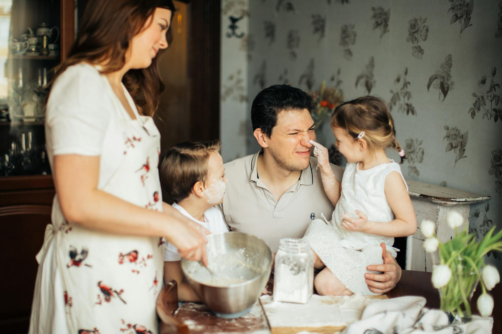
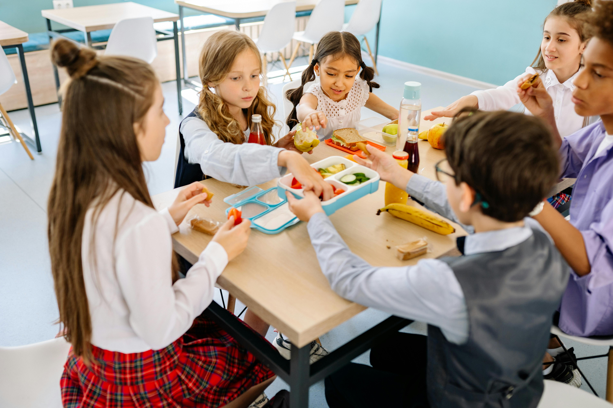

Agrofamília

A família Souza
"A família Souza descobriu na NutriCampo uma forma mais saudável e natural de se alimentar. Hoje, frutas e verduras fresquinhas fazem parte do dia a dia, trazendo mais energia e qualidade de vida para esta família."

Escola Básica Adolfo Konder
“A Escola Básica Adolfo Konder passou a incluir os alimentos da NutriCampo na merenda escolar e os resultados surpreenderam, hoje em dia as crianças estão mais ativas, felizes e bem nutridas. Não deixe de cuidar do seu pequenino.”